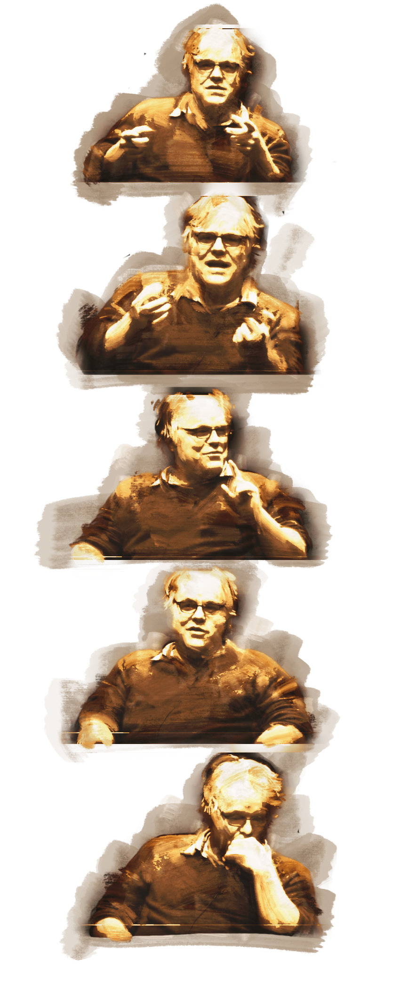

Phlip Seymour Hoffman macht in diesem Video ein paar Aussagen, die unter die Haut gehen.
people always say: life is short; that’s kind of the phrase: life is short, time is short… and it does as we get older time does quicken, you know, but he says and it’s so right: it’s long, and it’s long pertaining to that thought, that the past is not done with you, because you can’t get rid of it and so therefore it just starts to drag… It does, and it’s dragging on that guy…